Work Samples

Examples of what I do and how I work.
-
This site!
I had a lot of fun making it, I perused color schemes until I found a good starting point, goofed off in Figma for an hour, then wrote HTML & CSS until I was sufficiently amused.
All of the art, graphics, design, code, and vibes are 100% me, no AI necessary. Plenty of CSS chicanery, accessible HTML, and other nerdery if you poke through the assets and code.
-
Red Hat Documentation
-While at Red Hat I got to work on their software documentation site. It hadn't seen significant updates in many years when I arrived, and the customer relationship and code situation where in a poor state.
Within a year I went from front-end SME to a technical lead, and pitched and led an effort that led to a 32 point increase in the NPS score (-17.5 to 14.6).
- Recognized as one of Red Hat's top 150 premier technical contributors in 2023
- Discovery & Project Planning - I interviewed documentation authors, gathered customer feedback, and created analytics reports to understand the current state and set a baseline for improvement. I then wrote many documents detailing requirements and a system architecture for a new content management system that was approved.
- Technical Leadership - I pitched and led the effort to rebuild the front-end of documentation addressing design, accessibility, and helped solve content issues with documentation authors with complex needs.
- UX Leadership - partnered with our design team to help solve the user interface, user experience, and technical challenges that sprung out of our documentation system, process, and our users needs.